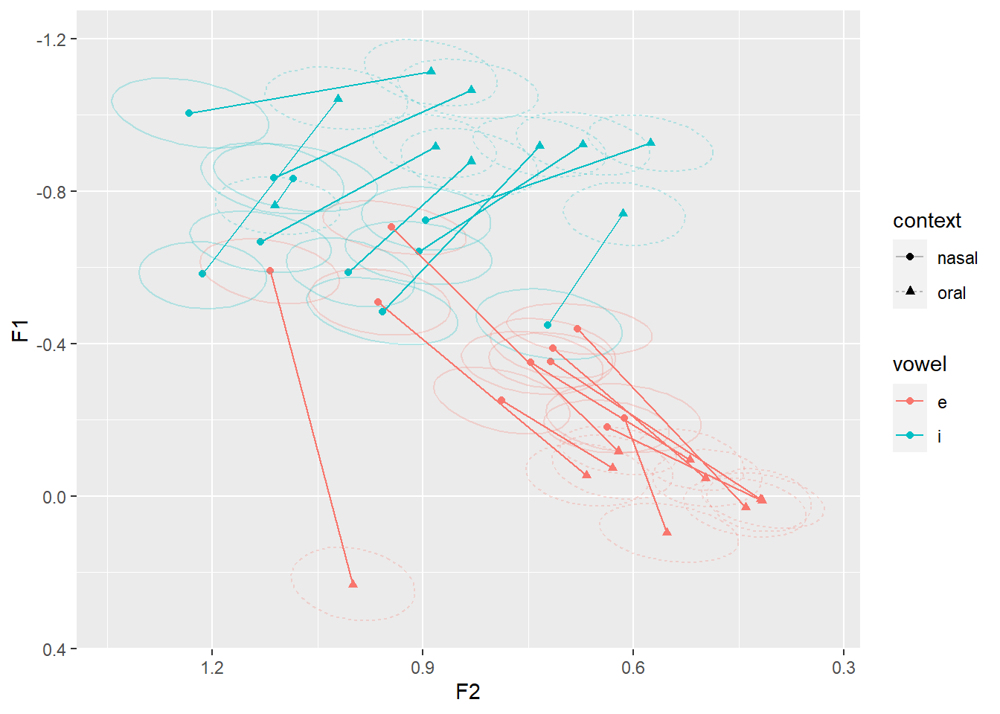

library(brms)MMO Tutorial
Packages
brms (Bürkner 2018) is used to fit the Bayesian model. It uses RStan (Stan Development Team, n.d.), which needs to be manually installed. Instructions for installing RStan can be found here: https://github.com/stan-dev/rstan/wiki/RStan-Getting-Started. Once RStan is installed, brms can simply be installed using install.packages("brms") (more information here: https://paul-buerkner.github.io/brms/).
tidybayes (Kay 2020) is used to get model predictions and to summarize model predictions.
library(tidybayes)adehabitatHR(Calenge 2006) the package used to compute Bhattacharyya affinity. The code below is adapted from Joey Stanley’s tutorial: https://joeystanley.com/blog/a-tutorial-in-calculating-vowel-overlap/.
library(adehabitatHR)Finally, we use tityverse for ggplot2 and dplyr functionality.
library(tidyverse)We use the patchwork library to help arrange ggplot2 plots.
library(patchwork)Data processing
We’ll be using the Raleigh corpus (Dodsworth and Benton 2020) from the SPADE project (Sonderegger et al. 2022), available on OSF: https://osf.io/79jgu.
raleigh_data_full <- read.csv("data/spade-Raleigh_formants_whitelisted.csv")To make this tutorial run-able on a personal laptop, we’ll just use the ten speakers who have the most data.
# make a vector containing the names of the 10 speakers with the most data
top_10_speakers <- raleigh_data_full %>%
count(speaker) %>% # the number of tokens per speaker
mutate(rank=dense_rank(desc(n))) %>% # rank number of tokens with most=1
filter(rank <= 10) %>% # filter out everyone except the top 10 speakers
pull(speaker) # convert speaker column to a vector
# filter the original dataset to only include top 10 speakers
raleigh_data_top10 <- raleigh_data_full %>%
filter(speaker %in% top_10_speakers) Before narrowing down to the two vowels of interest (/IH/ and /EH/), we want to Lobanov normalize using all vowel tokens (Lobanov 1971), i.e., take a z-score of F1 and F2 across all vowel tokens.
raleigh_data_norm <- raleigh_data_top10 %>%
group_by(speaker) %>% # vowels are normalized separately for each speaker
mutate(across(c(F1, F2), ~ (.x - mean(.x, na.rm = TRUE)) / sd(.x)))Check to see that the vowels are reasonably z-scored
raleigh_data_norm %>%
ggplot(aes(x=F2, y=F1, color=phone_label)) +
geom_point(alpha=0.25, show.legend=FALSE) +
facet_wrap(~speaker) +
scale_x_reverse() + scale_y_reverse() +
# scale_color_bright() +
theme_minimal() +
theme(text = element_text(family = "atkinson"))
Now, let’s narrow down the dataset to the tokens and quantities we’re interested in. We want stressed tokens of /IH/ and /EH/.
raleigh_data <- raleigh_data_norm %>%
# pick out just syllables with primary stress
filter(syllable_stress==1) %>%
# matching the unisyn label to the phone label for a quality check
filter((phone_label=="EH1" & UnisynPrimStressedVowel1=="e") |
(phone_label=="IH1" & UnisynPrimStressedVowel1=="i")) %>%
# make sure that UR in this dialect corresponds to lexical set
# (more important when there is more than one dialect)
filter(unisynPrimStressedVowel2_sca==UnisynPrimStressedVowel1) %>%
# label the context according to following consonant
mutate(context = case_when(
following_phone %in% c("B", "CH", "D", "DH", "F", "G", "HH", "JH", "K",
"L", "P", "R", "S", "SH", "T", "TH", "V", "W",
"Y", "Z", "ZH" ) ~ "oral", # oral consonants
following_phone %in% c("N", "M", "NG") ~ "nasal", # nasal consonants
TRUE ~ "other")) %>%
# get rid of everything that isn't an oral or nasal consonant
filter(context != "other") %>%
# get rid of voiced prevalar contexts (can include, but would want
# following consonant included in model as a predictor or random effect)
filter(following_phone!="NG", following_phone!="G") %>%
# make vowel and context factors and make sure that there aren't
# extraneous levels
mutate(vowel = as.factor(UnisynPrimStressedVowel1),
context = as.factor(context)) %>%
droplevels() %>%
# keep just the columns we're interested in
dplyr::select(speaker, sex, birthyear, vowel, context, word,
F1, F2, duration) %>%
# log transform and center duration
mutate(log_duration=log(duration)) %>%
mutate(z_log_duration=(log_duration-mean(log_duration))/sd(log_duration))Check to see that log duration is roughly normally distributed
raleigh_data %>%
ggplot(aes(x=z_log_duration)) +
geom_density() +
# scale_color_bright() +
theme_minimal() +
theme(text = element_text(family = "atkinson"))Not really, but it’s still much better than the raw durations:
raleigh_data %>%
ggplot(aes(x=duration)) +
geom_density() +
# scale_color_bright() +
theme_minimal() +
theme(text = element_text(family = "atkinson"))There is currently too much data to fit the model on my computer, so want to randomly pick 50 tokens of each vowel x context for each speaker
raleigh_data_50 <- raleigh_data %>%
group_by(speaker, context, vowel) %>%
slice_sample(n=50) %>%
ungroup()Exploratory plots
Let’s make some exploratory plots to set up our expectations.
First, let’s just start with looking at the phone x context distributions for each speaker.
raleigh_data %>%
ggplot(aes(x=F2, y=F1, color=vowel)) +
# geom_point(alpha=0.1, aes(shape=context)) +
stat_ellipse(level=0.66, aes(lty=context)) +
facet_wrap(~speaker)Let’s look at each speaker’s category center on the same graph
raleigh_data %>%
group_by(speaker, vowel, context) %>%
summarize(across(c(F1, F2), mean)) %>%
ungroup() %>%
ggplot(aes(x=F2, y=F1, color=vowel, shape=context)) +
geom_point() +
geom_line(aes(group=interaction(vowel, speaker))) +
scale_x_reverse() + scale_y_reverse()
The average (across speakers) effect of context on vowel for both F1 and F2.
raleigh_data %>%
# give all speakers equal weight
group_by(speaker, vowel, context) %>%
summarize(F1=mean(F1)) %>%
ungroup() %>%
# now average all speakers together
group_by(vowel, context) %>%
summarize(F1=mean(F1)) %>%
ungroup() %>%
ggplot(aes(x=context, y=F1, color=vowel)) +
geom_point() +
geom_line(aes(group=vowel))
Now make the same plot but with each individual speaker’s interactions
raleigh_data %>%
group_by(speaker, vowel, context) %>%
summarize(F1=mean(F1)) %>%
ungroup() %>%
ggplot(aes(x=context, y=F1, color=vowel)) +
geom_point() +
geom_line(aes(group=interaction(vowel, speaker)))
Model fitting
We are going to fit a simple multivariate Bayesian model (similar to the “minimal” model in our Interspeech paper (Smith, Sonderegger, and Consortium 2024)). For more model syntax examples (including more complex concepts, such as nested random effects and modelling variance), see the model-fitting scripts in the Interspeech folder of the github repository.
The model we are fitting jointly models F1 and F2, which is a key feature of the method we’re proposing. The remainder of the model structure is quite simple. The fixed predictors are context, vowel, log duration, and all interactions. There are by-word and by-speaker random intercepts, and by-speaker random slopes of of vowel, context, and their interaction.
F1 = bf(F1 ~
context*vowel +
(1|p|word) + (1+context*vowel|q|speaker))
F2 = bf(F2 ~
context*vowel +
(1|p|word) + (1+context*vowel|q|speaker))
model <- brm(F1 + F2 +
# set_rescor(TRUE) means that correlations between F1 & F2
# will be modelled.
set_rescor(TRUE),
# we want to use the smaller dataset so it doesn't take
# forever to fit
data=raleigh_data_50,
# if this file exists, this call will just read in the file.
# Otherwise, the call will save the model here.
file="tutorial_model.rmd",
# Set prior for correlations. All other parameters just use
# default priors.
prior = c(prior(lkj(1.5), class = cor)),
# my computer has 8 cores, so I'm using 4 here, change
# according to your own machine. Ideally, you want to use the
# same number of cores as chains, so that all the chains can
# run in parallel.
chains=4, cores=4,
# If there are warnings, consider increasing the number of
# iterations.
iter = 4000)prior_summary(model) prior class coef group resp dpar nlpar
(flat) b F1
(flat) b contextoral F1
(flat) b contextoral:voweli F1
(flat) b voweli F1
(flat) b F2
(flat) b contextoral F2
(flat) b contextoral:voweli F2
(flat) b voweli F2
student_t(3, -0.6, 2.5) Intercept F1
student_t(3, 0.8, 2.5) Intercept F2
lkj_corr_cholesky(1.5) L
lkj_corr_cholesky(1.5) L speaker
lkj_corr_cholesky(1.5) L word
lkj_corr_cholesky(1) Lrescor
student_t(3, 0, 2.5) sd F1
student_t(3, 0, 2.5) sd F2
student_t(3, 0, 2.5) sd speaker F1
student_t(3, 0, 2.5) sd contextoral speaker F1
student_t(3, 0, 2.5) sd contextoral:voweli speaker F1
student_t(3, 0, 2.5) sd Intercept speaker F1
student_t(3, 0, 2.5) sd voweli speaker F1
student_t(3, 0, 2.5) sd speaker F2
student_t(3, 0, 2.5) sd contextoral speaker F2
student_t(3, 0, 2.5) sd contextoral:voweli speaker F2
student_t(3, 0, 2.5) sd Intercept speaker F2
student_t(3, 0, 2.5) sd voweli speaker F2
student_t(3, 0, 2.5) sd word F1
student_t(3, 0, 2.5) sd Intercept word F1
student_t(3, 0, 2.5) sd word F2
student_t(3, 0, 2.5) sd Intercept word F2
student_t(3, 0, 2.5) sigma F1
student_t(3, 0, 2.5) sigma F2
lb ub source
default
(vectorized)
(vectorized)
(vectorized)
default
(vectorized)
(vectorized)
(vectorized)
default
default
user
(vectorized)
(vectorized)
default
0 default
0 default
0 (vectorized)
0 (vectorized)
0 (vectorized)
0 (vectorized)
0 (vectorized)
0 (vectorized)
0 (vectorized)
0 (vectorized)
0 (vectorized)
0 (vectorized)
0 (vectorized)
0 (vectorized)
0 (vectorized)
0 (vectorized)
0 default
0 defaultTo make predictions, we need to know what parameter values to predict for. If we want to make predictions for an “average speaker,” we want to ignore the random effects structure entirely, i.e., predict F1 and F2 as a function of just vowel and context.
Let’s make a dataframe with every combination of vowel and context:
nd1 <- expand_grid(context = levels(model$data$context),
vowel = levels(model$data$vowel))If we want to make
nd2 <- expand_grid(context = levels(model$data$context),
vowel = levels(model$data$vowel),
speaker = unique(model$data$speaker))
num_draws=100fitted_sp_int <- nd2 %>%
add_epred_draws(model,
re_formula = ~(1+context*vowel|
q|speaker),
ndraws=num_draws) %>%
ungroup() %>%
pivot_wider(names_from=".category", values_from=".epred")predicted_sp_int <- nd2 %>%
add_predicted_draws(model,
re_formula = ~(1+context*vowel|
q|speaker),
ndraws=num_draws) %>%
ungroup() %>%
pivot_wider(names_from=".category", values_from=".prediction")sp_estimates <- fitted_sp_int %>%
group_by(speaker, vowel, context) %>%
mean_qi() %>%
ungroup()sp_estimates %>%
ggplot(aes(x=context, y=F1, color=vowel)) +
geom_point() +
geom_line(aes(group=interaction(vowel, speaker)))raleigh_data %>%
group_by(speaker, vowel, context) %>%
summarize(F1=mean(F1)) %>%
ungroup() %>%
ggplot(aes(x=context, y=F1, color=vowel)) +
geom_point() +
geom_line(aes(group=interaction(vowel, speaker)))sp_estimates %>%
ggplot(aes(x=context, y=F2, color=vowel)) +
geom_point() +
geom_line(aes(group=interaction(vowel, speaker)))
raleigh_data %>%
group_by(speaker, vowel, context) %>%
summarize(F2=mean(F2)) %>%
ungroup() %>%
ggplot(aes(x=context, y=F2, color=vowel)) +
geom_point() +
geom_line(aes(group=interaction(vowel, speaker)))sp_estimates %>%
ggplot(aes(x=F2, y=F1, color=vowel, shape=context)) +
geom_point() +
stat_ellipse(data=fitted_sp_int,
aes(group=interaction(speaker, vowel, context), lty=context),
level=0.66, alpha=0.25) +
geom_line(aes(group=interaction(vowel, speaker))) +
scale_x_reverse() + scale_y_reverse()raleigh_data %>%
group_by(speaker, vowel, context) %>%
summarize(across(c(F1, F2), mean)) %>%
ungroup() %>%
ggplot(aes(x=F2, y=F1, color=vowel, shape=context)) +
geom_point() +
geom_line(aes(group=interaction(vowel, speaker))) +
scale_x_reverse() + scale_y_reverse()
predicted_sp_int %>%
ggplot(aes(x=F2, y=F1, color=vowel, lty=context)) +
stat_ellipse(level=0.66) +
stat_ellipse(data=raleigh_data, level=0.66, alpha=0.25) +
facet_wrap(~speaker)
Overlap calculations
Now that we have predicted and fitted dataframes that “look like” the raw data, we can calculate any measure of overlap we like.
References
Bürkner, Paul-Christian. 2018. “Advanced Bayesian Multilevel Modeling with the R Package Brms.” The R Journal 10 (1): 395–411. https://doi.org/10.32614/RJ-2018-017.
Calenge, Clement. 2006. “The Package Adehabitat for the R Software: A Tool for the Analysis of Space and Habitat Use by Animals.” Ecological Modelling 197: 1035.
Dodsworth, Robin, and Richard A. Benton. 2020. Language Variation and Change in Social Networks: A Bipartite Approach. Routledge.
Kay, Matthew. 2020. “Tidybayes: Tidy Data and Geoms for Bayesian Models.” R Package Version 2 (1): 1.
Lobanov, Boris. 1971. “Classification of Russian Vowels Spoken by Different Speakers.” Journal of the Acoustical Society of America 49 (2B): 606–8. https://pubs.aip.org/asa/jasa/article-abstract/49/2B/606/747097/Classification-of-Russian-Vowels-Spoken-by.
Smith, Irene, Morgan Sonderegger, and The Spade Consortium. 2024. “Modelled Multivariate Overlap: A Method for Measuring Vowel Merger.” In Interspeech 2024, 1–4. ISCA.
Sonderegger, Morgan, Jane Stuart-Smith, Michael McAuliffe, Rachel Macdonald, and Tyler Kendall. 2022. “Managing Data for Integrated Speech Corpus Analysis in \Textit{SPeech Across Dialects of English} (SPADE).” In The Open Handbook of Linguistic Data Management, edited by Andrea L. Berez-Kroeker, Bradley McDonnell, Eve Koller, and Lauren B. Collister, 195–207.
Stan Development Team. n.d. “RStan: The R Interface to Stan.” https://mc-stan.org/.